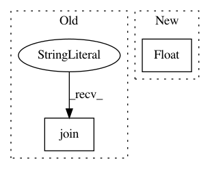

0a90a1d137bb4fa0b42d3ffbe8e0594e90eafa06,hicexplorer/chicAggregateStatistic.py,,write,#Any#Any#Any#Any#Any#,161
Before Change
for data in pNeighborhoods:
new_line = "\t".join(pInteractionLines[data][:7])
new_line += "\t" + "\t".join(format(float(x), "10.5f") for x in pInteractionLines[0][8:])
new_line += "\t" + format(pNeighborhoods[data][-3], "10.5f") + "\t" + format(pNeighborhoods[data][-2], "10.5f") + "\t" + format(pNeighborhoods[data][-1], "10.5f")
new_line += "\n"
file.write(new_line)
After Change
def write(pOutFileName, pHeader, pNeighborhoods, pInteractionLines, pScores=None):
sum_of_interactions = float(pHeader.split("\t")[-1].split(" ")[-1])
log.debug("sum_of_interactions {}".format(sum_of_interactions))
with open(pOutFileName, "w") as file:
file.write(pHeader)
file.write("//ChrInteraction\tStart\tEnd\tRelative distance\tSum of interactions\tRel Inter target\trbz-score target\tRaw target")
In pattern: SUPERPATTERN
Frequency: 3
Non-data size: 2
Instances
Project Name: deeptools/HiCExplorer
Commit Name: 0a90a1d137bb4fa0b42d3ffbe8e0594e90eafa06
Time: 2019-04-04
Author: wolffj@informatik.uni-freiburg.de
File Name: hicexplorer/chicAggregateStatistic.py
Class Name:
Method Name: write
Project Name: geometalab/OSMDeepOD
Commit Name: 5498cb8bd7e7f3bb10ffe7d2c7ce3b0753df71e2
Time: 2017-03-20
Author: samuel.kurath@gmail.com
File Name: src/train/retrain.py
Class Name:
Method Name: get_or_create_bottleneck
Project Name: danforthcenter/plantcv
Commit Name: b0779f24788328ffd928c6821f7f436da78e97cc
Time: 2017-04-19
Author: mgehan@danforthcenter.org
File Name: plantcv/analyze_NIR_intensity.py
Class Name:
Method Name: analyze_NIR_intensity